-----------------------------------botの開発環境構築-----------------------------------
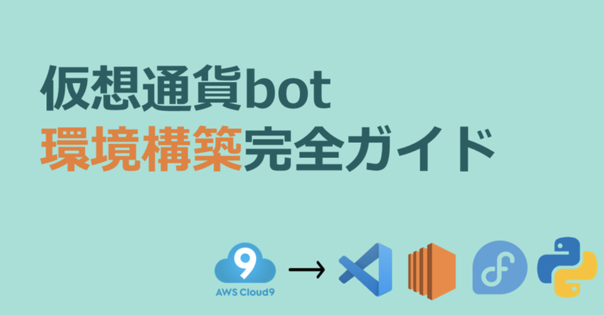
--------------------------------クラウド9を使わない理由--------------------------------
Cloud9は直感的なGUIでプログラミング初学者でも分かりやすい素晴らしいAWS上のサービスです。
仮想通貨bot界隈でもまず初めに紹介されるサービスです。
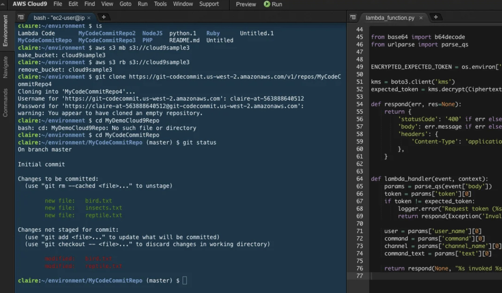
しかしながらbot運用で利用していると以下のような課題があると感じられます。
内蔵エディターがネイティブアプリには劣る
Cloud9は内蔵エディターを搭載しておりWebアプリとしては高性能ですが、ネイティブなエディターには劣ります。VSCodeに乗り換えるとPythonのシンタックスハイライトやコード補完、型推定などが大幅に強化されます。コーディングはVS Codeを使ってCloud9にコピペする使い方もありますが、手動でファイル操作するよりもVSCodeまたはコンソール上で操作したほうがファイル管理が煩雑になりません。
いちいちAWSへのログインが必要
これはCloud9とう特性上仕方ない作業です。AWSのログインってなぜかメールアドレスとパスワードの画面遷移があって、しかも毎回ロボットか疑われるので地味に面倒ですよね...。VS CodeなどからSSHで接続すれば公開鍵認証なのでパスワードを打つ必要はなくなります。
スマホに対応してない
スマホで一応Cloud9は開けますが非常に操作しにくいのですよね。外出中に緊急でbotを止めるのは困難です。スマホからはSSHクライアントアプリを使うことで対応できます。ログなどもスマホから直接みれればLINEやDiscord通知を作りこむ必要も下がるかもしれませんね。
Pythonバージョンが古い
これはCloud9自体の問題ではないのですが、AWS上のCloud9ページから作った場合デフォルトの「Amazon Linux 2」というLinuxディストロが選択されます。Amazon Linux2はベースのPythonバージョンが古い(現在3.7)ので、最新(現在3.9)をインストールするには「ビルド」という作業が必要です。ビルドは幾つかのコマンドを覚える必要がありますし何せPythonのインストール・アップデートの毎に10~15分程度の処理時間が掛かって面倒です。(Linuxを学習したい場合は試してみるのありだと思います)Pythonはバージョンアップで多くの新機能や改善が行われ、bot開発の効率にも影響するので、やはり最新バージョンを利用することをおすすめします。なのでビルドが不要で既に最新版のPythonがベースで入っているLinuxディストロに乗り換えることで面倒な作業を減らすことができます。
-----------------------------------------環境構成----------------------------------------
こちらが私が考える最適解な環境構成です。
- エディター: VS Code
- クラウド環境: AWS、GCPなど
- (任意)ローカル環境: WSL2、またはローカルLinuxマシン
- Linuxディストロ: Fedora
- SSHクライアント: Windows Terminal、Termux(Android)
では実際に構築する手順を書いていきます。
------------------------------------Fedoraについて------------------------------------
最初に説明するのが説明するのがLinuxの「Fedora」です。
先述したような最新のPythonを簡単に利用できるLinuxディストロというのがFedoraです。FedoraはAmazon Linux 2やよく利用されるCentOS、RHELと呼ばれるLinuxの兄弟です。基本的には特に違いを考えずに以降できると思います。余談ですがFedoraはこの中では「先進的な機能を開発・テストするためのLinux」という位置づけとなっています。その為か最新のPythonがデフォルトで利用できるようになっています。またFedoraは現在の最新安定版のPython 3.9より新しいプレリリース版のPython 3.10も利用できるのが特徴です。ではこのFedoraを利用してクラウド環境を作っていきます。
-----------------------------------AWSアカウント作成-----------------------------------
まずはAWSのアカウントを作りましょう。
👇リンク画像からAWSアカウント作成ページに進んでください。
進んだら"新しいアカウントの作成"からメアド.パスワード.住所.クレジットカードを登録して下さい。アカウント作成は以上です。(無料枠で進めていきますがアカウント作成にはクレジットカード登録必須です。
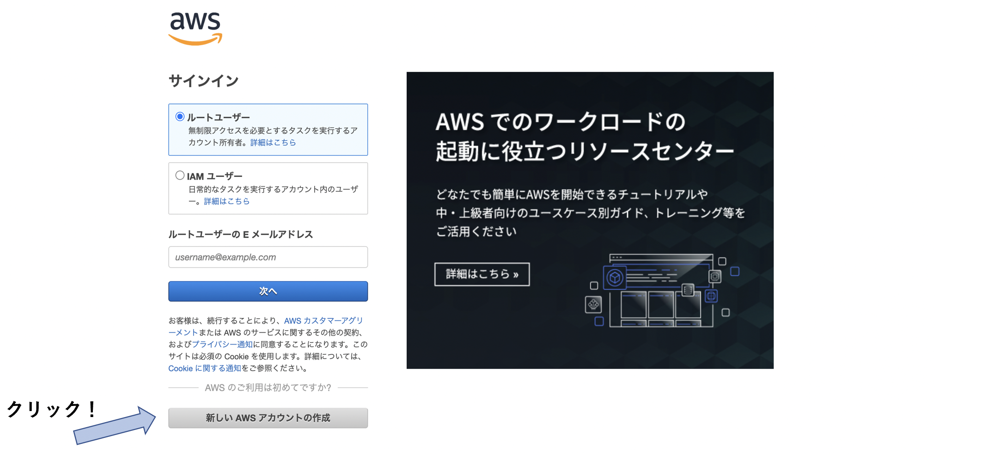
-----------------------------------キーペアを作成-----------------------------------
キーペアとはSSHを利用して公開鍵認証を行う為のファイルです。語弊ありで説明すると、手入力が難しい非常に長いパスワードの鍵ファイルです。この鍵に対する鍵穴を作っているマシンのみ接続が許されるのでIDとパスワードによる認証よりも安全に利用できます。 (興味がある方は「公開鍵認証」で検索してみましょう)
AWSにログインしたら👇画像の矢印の検索欄にEC2と入れて検索して、EC2を選択して下さい。
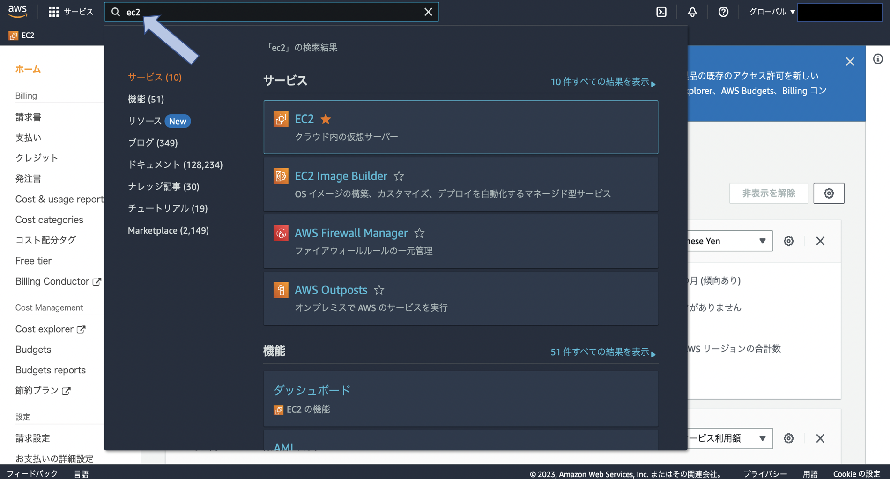
ダッシュボードに進み、👇画像の矢印のキーペアを選択して下さい。
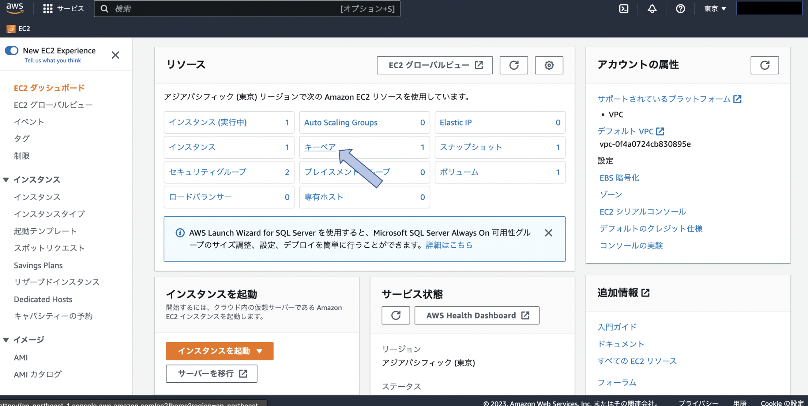
👇画像の矢印のキーペアを作成を選択して下さい。
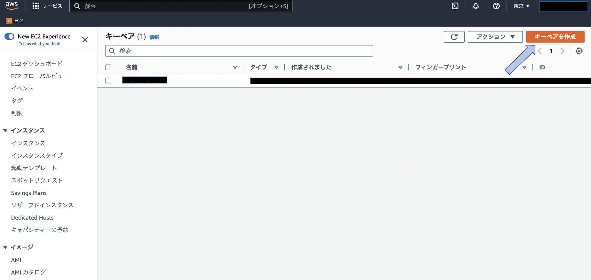
名前欄にid_rsa・キーペアタイプにRSA・プライベートキーファイルに.pemを選択してキーペアを作成をクリックでローカルに「id_rsa.pem」ファイルがダウンロードされます(この後すぐ使います)
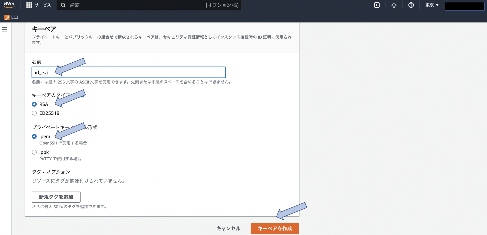
キーペアとはSSHを利用して公開鍵認証を行う為のファイルです。語弊ありで説明すると、手入力が難しい非常に長いパスワードの鍵ファイルです。この鍵に対する鍵穴を作っているマシンのみ接続が許されるのでIDとパスワードによる認証よりも安全に利用できます。 (興味がある方は「公開鍵認証」で検索してみましょう).
これでキーペアの作成は以上です。
------------------キーペアのパーミッションコントロール(macOSのみ) -------------------
windowsの方は飛ばして"インスタンスの立ち上げ"に進んでください。
ダウンロードフォルダに先程作ったid_rsa.pemという認証ファイルがありますね。
この認証情報の入ったファイルは、当然誰でも利用出来る状態だと危ないわけです。そこでmacでは認証ファイルの権限が危険な状態では利用できない仕様になっているので,権限付与を行わないといけません。
# エラー文
permission denied
この工程を飛ばすと上記のようなエラー文が出ます。意味は、”実行権限がないよ！”と言っています。
そこで、実行権限を与えてあげる為に、下記の順番でターミナル上でコマンドを実行して下さい。
# 1・チェンジディレクトリコマンドでid_rsa.pemがあるダウンロードファイルに移動
cd downloads
# 2・権限設定を変更するコマンドで秘密鍵ファイルの権限を600に設定します。
chmod 600 id_rsa.pem
以上です！！これで認証ファイルの権限の設定終了です。
-----------------------------------インスタンスの立ち上げ---------------------------------
それではインスタンス立ち上げていきましょう。AWS EC2についてです。
「EC2の立ち上げなんて分かってますよ」という方はスキップしてください。
👇リンク画像からクラウド環境を作ります。

ページ下部「for Amazon Public Cloud」の「x86_64 AMIs」をクリックしてリージョンの選択。
東京リージョンで大丈夫です。
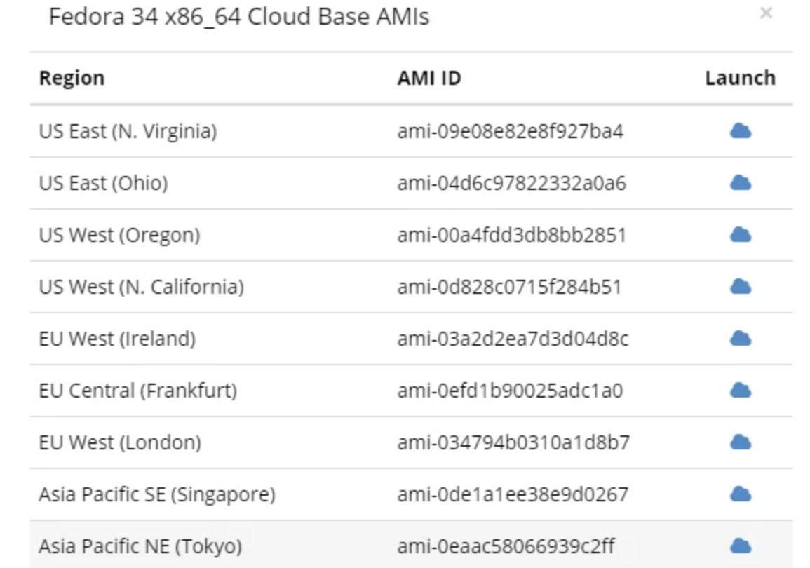
(補足)
立ち上げるリージョンについてですが、東京リージョンまたは取引所のサーバー所在地に最も近いリージョンを選択します。サーバー所在地は引用サイトを貼ります。
こちらのTardis.devという仮想通貨取引所のヒストリカルデータを提供しているライブラリのドキュメントページに、主要取引所のAPIサーバーのサービス名とリージョンがまとめられています。上記目次ページから各取引所ページに飛んだ最下部に書かれています。(こちらのライブラリを利用する訳ではありません)
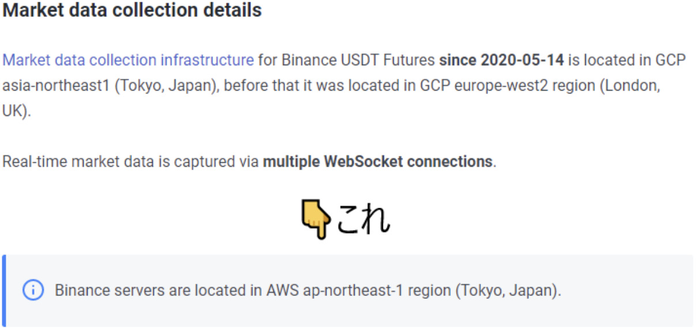
高頻度botなど、取引所との通信速度が重要な場合はこのサイトを参考にリージョンを選択します。 そうでない場合は普通に我々の住まいと物理的に距離が近い東京リージョンを選択しましょう。
(余談ですが、Binanceなどの海外取引所も何故か東京リージョンが使われています)
脱線から戻って、👇画像の矢印の名前とタグはなんでもいいです。最初は例の通り"fedora"としましょう。
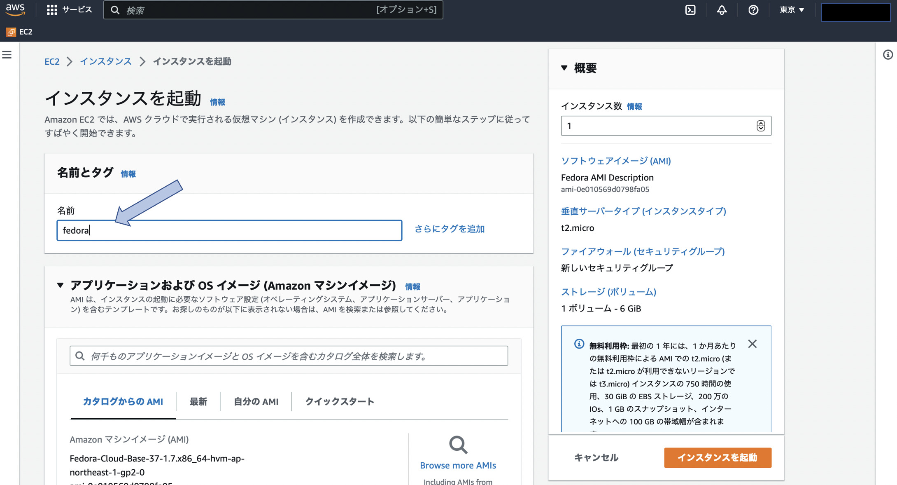
👇画像の矢印.キーペアの選択です。先程準備しておいたid_rsaを選択しましょう。
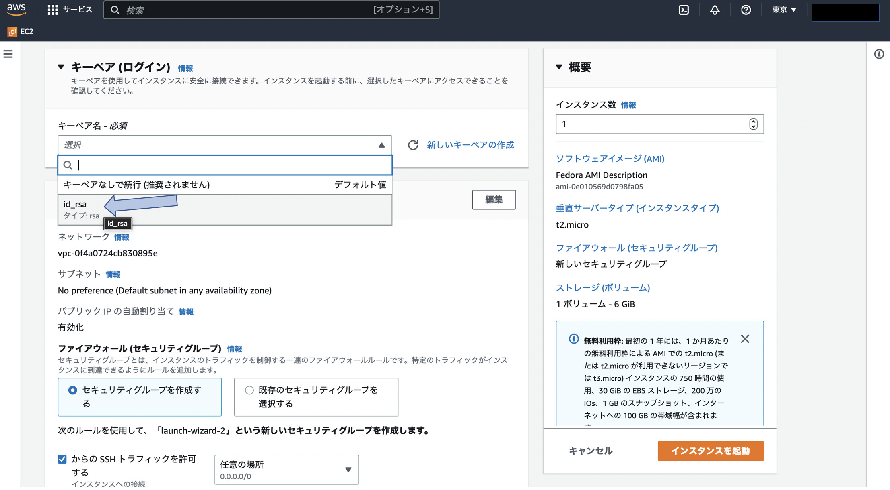
次にセキュリティですが、👇画像の矢印.launch-wizard-1を選択、なければdefaltでも大丈夫です。
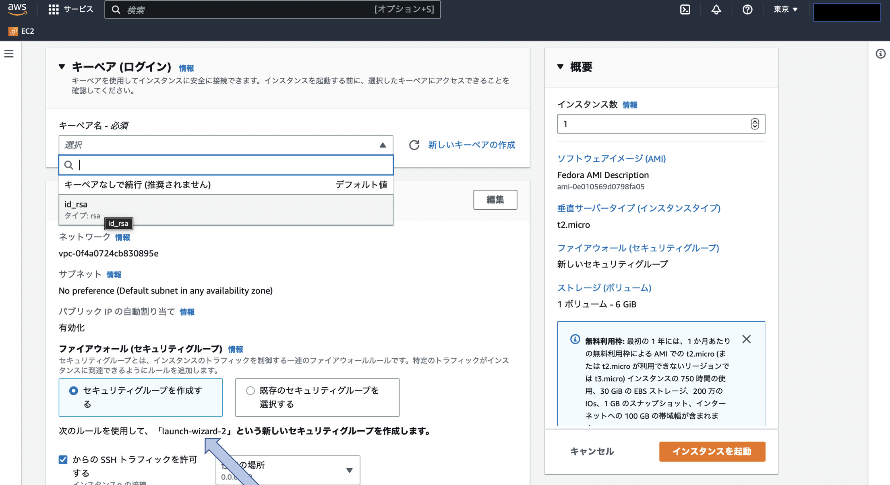
次に、👇画像の矢印.ストレージですが。botの運用方法と相談です。ただデフォルトの状態ではOSインストール後の容量も考えるとキツキツです。今回は無料枠のMAX26GiBにしてます。botのログを高頻度で吐いたり、DBを構築してデータを溜めこむ場合はもっとあってもいいかもしれません。
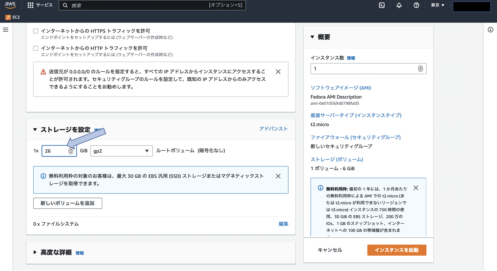
はい最後に👇画像の矢印.インスタンスを起動をクリックでインスタンス立ち上げは終わりです。
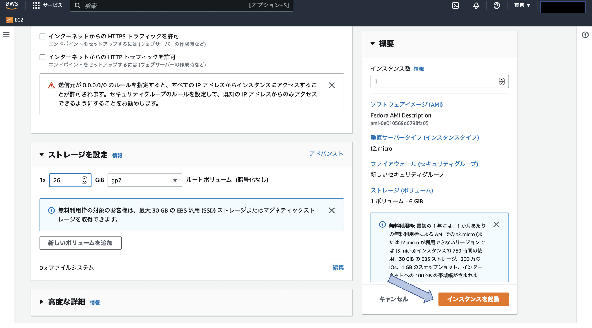
それでは立ち上げたインスタンスを確認してみましょう.
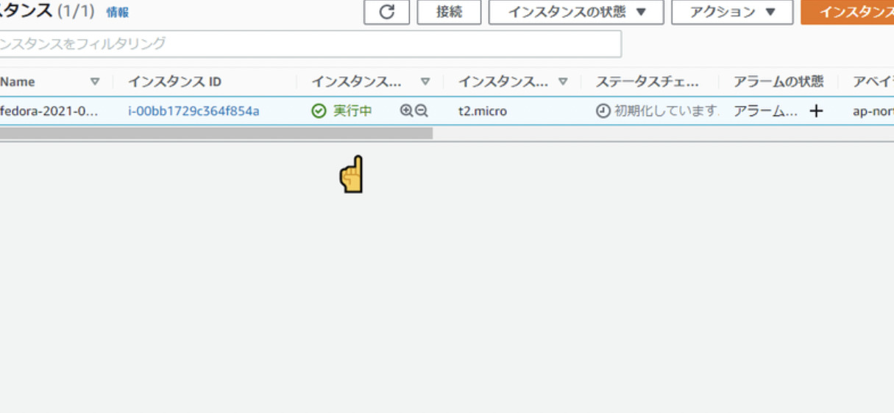
インスタンスの状態が「実行中」になるまで待ちましょう。 これでクラウド環境の構築ができました！
-------------------------------------SSHの接続と設定------------------------------------
では作成した仮想マシンにSSH接続できるか試してみましょう。
Windowsユーザーの場合は先に「Windowsターミナル」をインストールしましょう。Microsoft Storeなので簡単ですね。(Windowsユーザーのみ.MACユーザーはデフォのターミナルを使って下さい.)
ここからインストール👇
WindowsターミナルはWindowsをコマンドラインで操作するソフトです。 既存の「Powershell」でも大丈夫なのですが、Windowsターミナルの方がエンジニアっぽくてカッコイイです(超重要)
macOSユーザーの方はデフォルトのターミナルで大丈夫。
(ここからMACの方も共通!!)
ターミナルのインストールがすんだらAWSダッシュボードからインスタンス(実行中)をクリック。
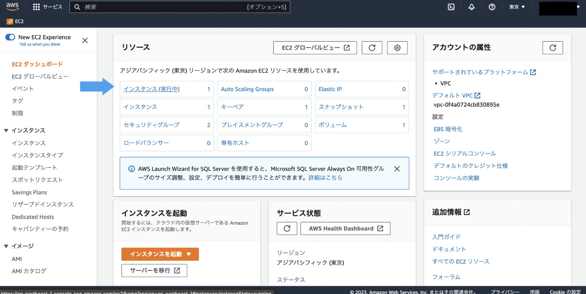
👇画像の矢印.立ち上げたインスタンスにチェックを入れて、接続をクリックして下さい。
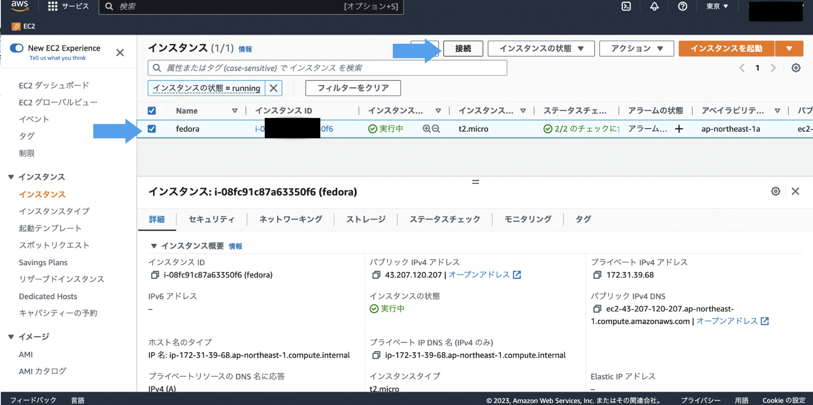
👇画像の矢印.の部分をコピ-して下さい。(自分のインスタンスIDは隠しています。)
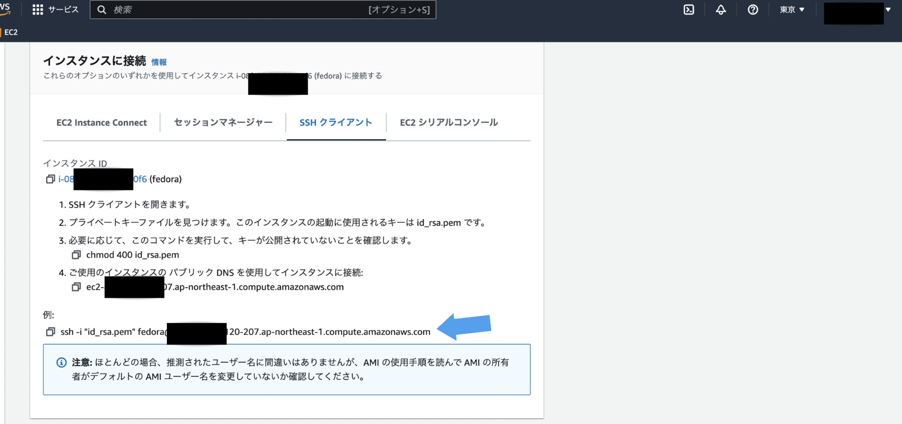
コピペしたコマンドをターミナルに張り付けてEnterを押します。 「Are you sure you want to continue connecting ... ?」とWarningで聞かれるので「yes」と入力してEnterを押します。ターミナルが [fedora@ip-172-31-34-2 ~]$ などとなっていれば接続成功です。 (@以降は人によって異なります)
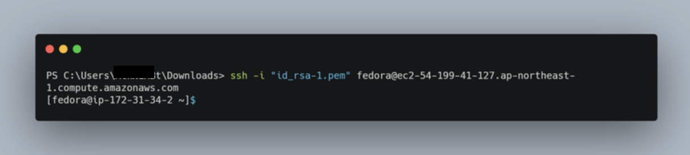
SSH接続ができたらひとまずはFedoraを最新の状態にアップデートしてみてください。
起動後の決まり文句みたいなものです。
sudo dnf upgrade -y
アップデートが終わったらPythonバージョンなど確認してみましょう。
python3 -V
Linux環境に用がなければCtrl+Dを入力してLinuxからExitしましょう。
接続確認ができました。
では次にSSHの追加の設定を行います。
Windowsユーザーの場合はスタートメニューを開き「%USERPROFILE%」と入力(コピペ)してユーザープロファイルのフォルダを開きます。macOSユーザーの場合はホームディレクトリを開いてください。
そこに「.ssh」というフォルダを作成されているはずです。
「.ssh」フォルダの中に、先ほどの「id_rsa.pem」の鍵ファイルを移動させます。
mvコマンドで移動（macユーザーがダウンロードフォルダから.sshに移動）
mv ~/Downloads/id_rsa.pem ~/.ssh/
そうしたら移動した「id_rsa.pem」のファイル名を「id_rsa」にリネームしてください。これがSSH既定のファイル名になっていて、この鍵ファイルを指定せずともSSHで接続できるようになります。
id_rsa.pemがあるフォルダの直下で下記コマンドを実行。
mv id_rsa.pem id_rsa
次に同じ「.ssh」フォルダに「config」という名前のファイルを作ってください。SSHの既定の設定ファイルになります。
「config」ファイルをメモ帳などで開いて次の内容を貼り付けてます。
Host *
StrictHostKeyChecking no
ServerAliveInterval 60
Host fedora
HostName ec2-54-199-41-127.ap-northeast-1.compute.amazonaws.com
User fedora
上段の設定は接続時にyesと打つ作業をなくし.1分ごとにpingを飛ばして放置しても切断されなくなります。
下段は接続先のショートカット及びVS Code用の接続設定です。
HostNameはご自身のインスタンスのアドレスに変更してください。アドレスというのは先ほどのSSH接続コマンドの「fedora@~~~」の@以降の文字列です。またIPやDNSアドレスはAWSの管理画面で確認できます。Hostの部分はショートカット名です。ご自身の好きなように"aws"などと定義してもいいと思います。
(説明では"fedora"とします)
1つ注意ですが、EC2インスタンスを再起動などするとこのアドレスは変わってしまうので書き換えが必要になってしまいます。 そこで通常はElastic IPを利用して静的なアドレスを取得します。Elastic IPの解説は省きますので検索お願いします。このnoteをみて試しに環境を作ってる際は不要だと思いますが、本番bot稼働の際には静的IPにして、configもそちらのIPに書き換えましょう。
configが正しく設定できたか確認する為、ターミナルからSSHコマンドを入力してみてください。
(fedoraの部分はconfigのHostに設定した名前です)
ssh fedora
先ほどと同じようにAWSに接続できれば大丈夫です。
エラーがでたらconfigファイルの設定を確認してください。
----------------------------------VS Codeのインストール---------------------------------
クラウド環境とSSHの設定が整ったのでVS Codeをインストールしていきましょう。
既にVS Codeあるよ!って方は画像1個下のSSH接続設定から始めてください。
VS CodeとはMicrosoftのコードエディターです。シンプルながらも多彩な機能とプラグインがあり最近の主流のエディターです。Pythonの拡張機能を利用することでbotの開発効率を大幅に上げられます!公式サイトからダウンロードし、インストーラーの手順に従ってしてください。(簡単なので省きます)
VS Codeは最初は英語になっているので日本語拡張機能をインストールします。 拡張機能のアイコンをクリックして「ms-ceintl.vscode-language-pack-ja」と検索し拡張機能をインストールします。
(画像はインストール済みなので表記は異なっています)
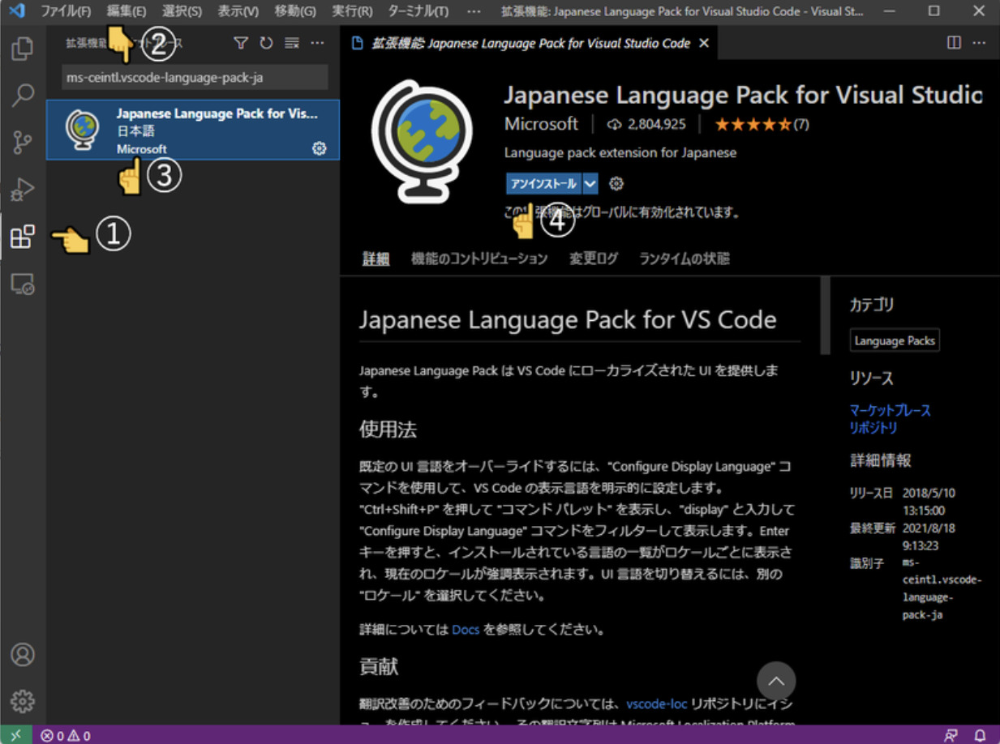
再起動を促されると思うので再起動すると、日本語で表示されます。
次にVS CodeでのSSH接続設定をしていきます。
また拡張機能から「ms-vscode-remote.vscode-remote-extensionpack」と検索してRemote Developmentをインストールします。これによりVSCodeからSSHと後述のWSLへの接続が可能になります
Remote Developmentをインストールすると「リモートエクスプローラー」アイコンが増えています。
SSH Targetsを選択してfedoraをクリックしてVS CodeからSSHでAWSにアクセスをします。
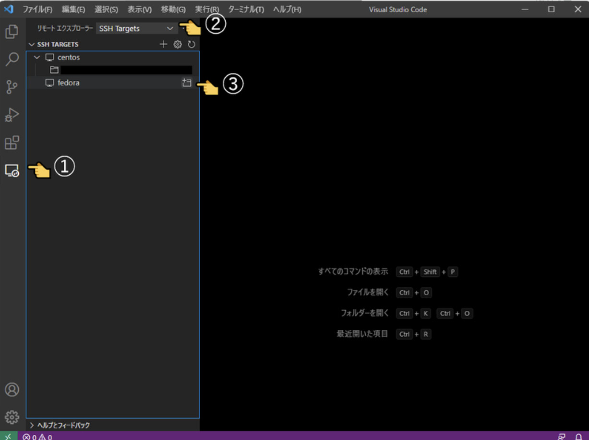
プラットフォームはホスト側なのでLinuxを選択します。
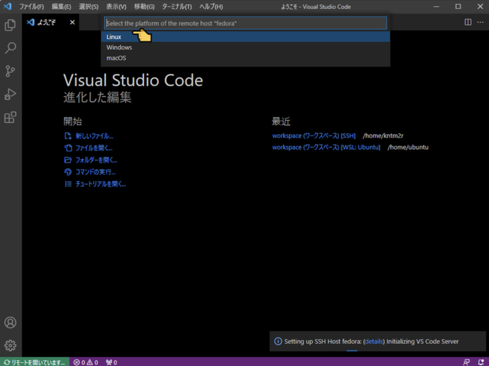
これで無事にVS CodeからAWSインスタンスに接続できました! 「ターミナル」から「新しいターミナル」をクリックすると先ほどWindowsターミナルから接続したのと同じようにコマンドライン環境を開くことが可能になっています。
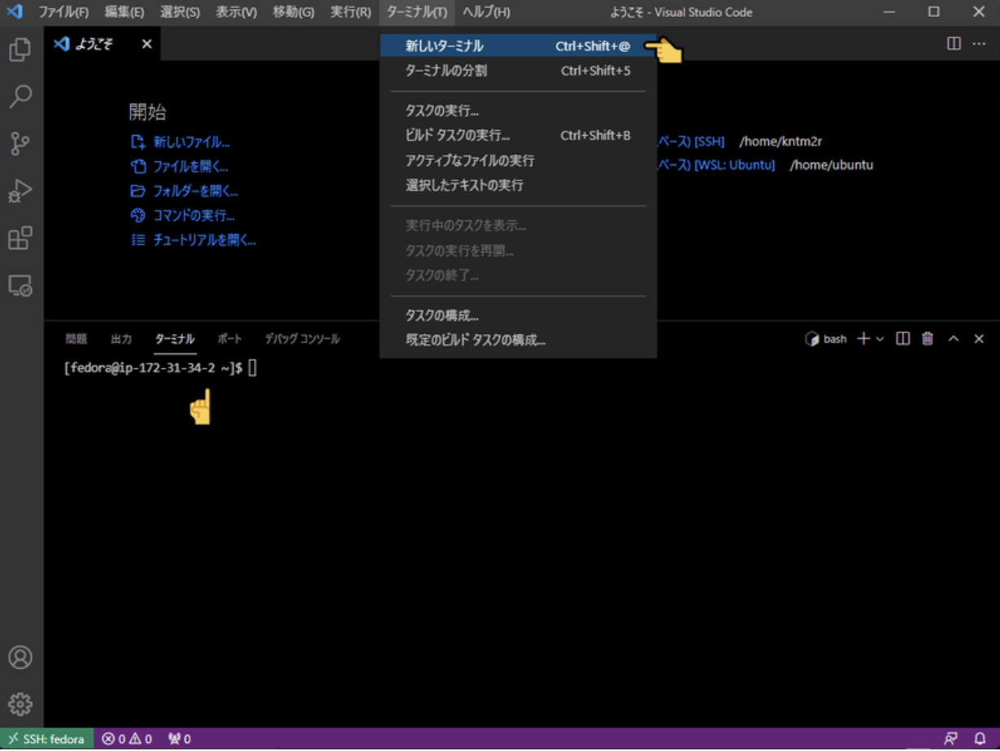
では次にまた拡張機能タブから「ms-python.vscode-pylance」と検索してPylanceをインストールします。PylanceはVS CodeのPython機能を大幅に強化するプラグインです。Pythonを使うなら必須です。
先ほどと違ってSSH接続後に拡張機能をインストールしたので、Fedora側にPylanceをインストールしました。もしWindowsまたはmacOSのローカル側にも入れたい場合は、右下のSSHアイコンから「リモート接続を終了する」をしてからインストールしましょう。
テストでPythonファイルを実行していきます。
先ほどVS Codeから開いたターミナルで適当なディレクトリを作成します。(説明では"script"というディレクトリを使用します)それをcodeコマンドで開いてください。
mkdir script
code script/
確認画面が出るので信頼する設定にしてフォルダを開きます。
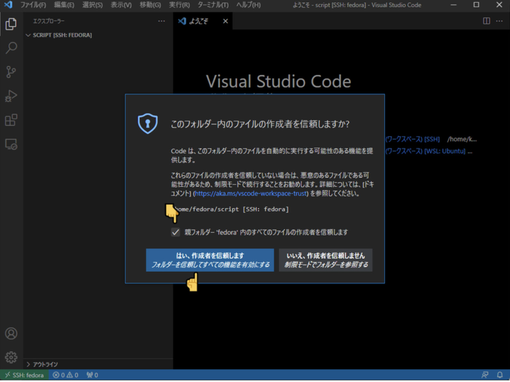
では実際にPythonが動くか試してみましょう。(面倒な場合は飛ばして大丈夫です)
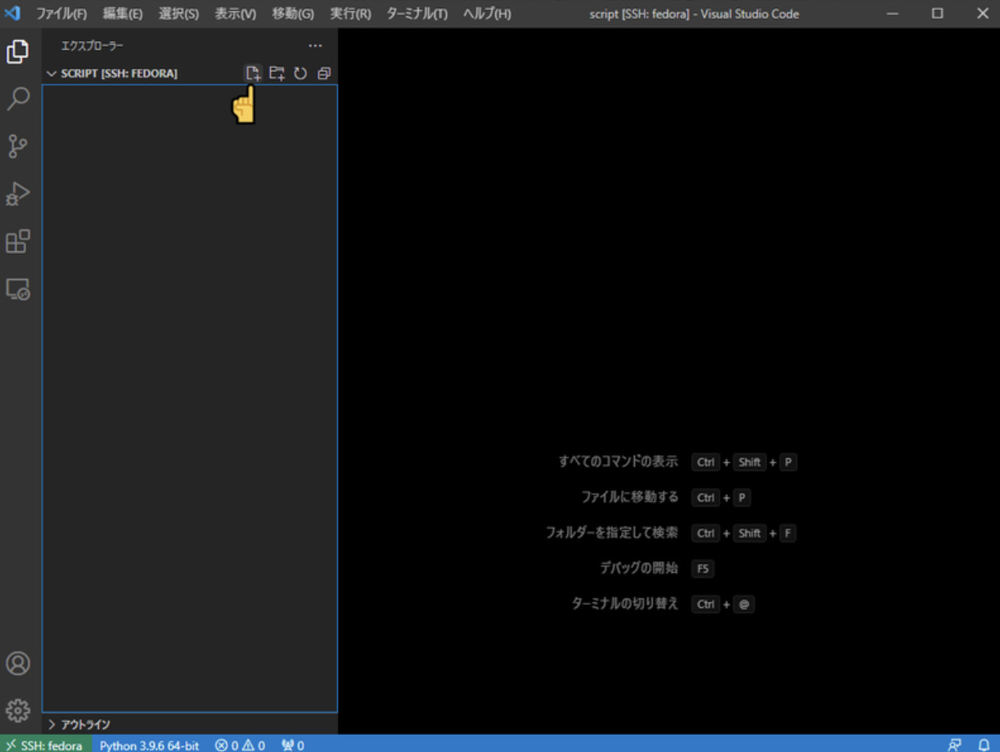
新しいファイルのアイコンをクリックして適当に「test.py」を作成します。
コードを上記からコピペしてください。
折角なのでHello Worldとかではなく、BybitからTickerを取得するAPIを叩いてみます。
実行アイコンをクリックしてPythonが動作すればOKです。
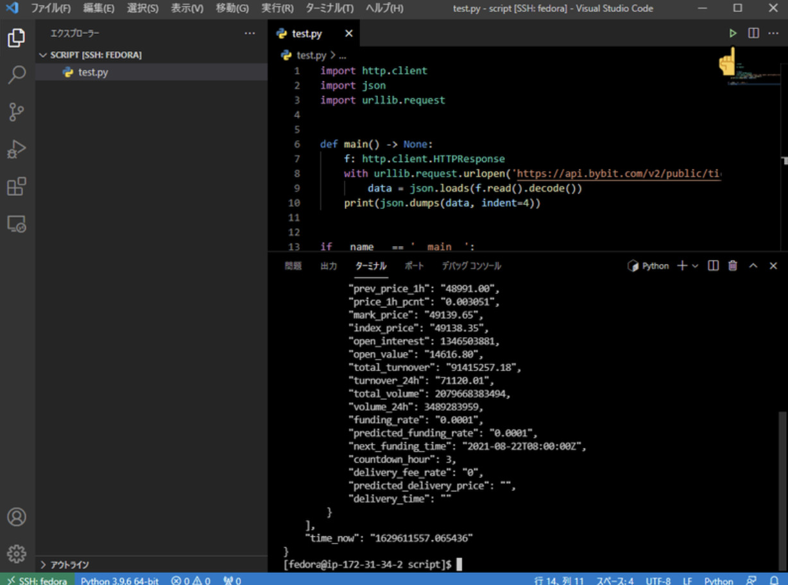
これでPythonのコーティング及び実行環境が整いましたね☕
コード画面をみるとシンタックスハイライトも分かりやすく、コード補完も外部ライブラリにも適用されます。ファイルも直接編集できるのでbotコーディングが捗りますね!いつも使っているライブラリのpip installなどは各自行ってください。
----------------------------------tmuxからbotを稼働する---------------------------------
上記では実行ボタンからPythonを実行しましたが、この方法でbotを実行するとターミナル終了時またはVS Codeの終了時にbotが終了してしまいます。SSHを切断するとシェルのプロセスも終了する仕様なので、「コーディングしながら実行」はよくても「常時稼働」させることはでません。これを解決するためにtmuxというターミナル多重化ソフトをインストールします。ちなみにtmuxはCloud9上では元々インストールされていてターミナルが複数起動できているのはこのソフトのおかげです。
sudo dnf install tmux -y
こちらをインストールしたら「tmux」コマンドで仮想ターミナルを開きます。
tumx
そうすると仮想ターミナルが開けました。
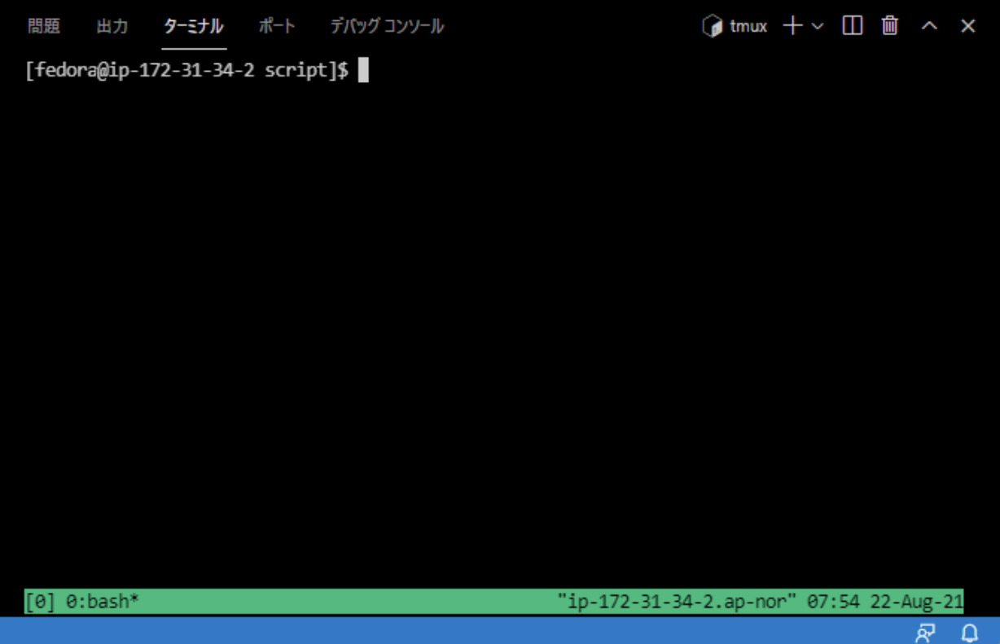
botを稼働する際はこの仮想ターミナルからpython3コマンドで実行します。
python3 test.py
コマンドを実行したら「Crtl+B」を押しその後「D」キーを押すと仮想ターミナルから抜けることができます
再度仮想ターミナルに入るには↓
tumx attach-session
とコマンドを入力すると最後の仮想に入れます。
先ほどのtest.pyはbotと違ってすぐに終了するスクリプトですが
ターミナルがそのまま残っているので実行結果をみられます。
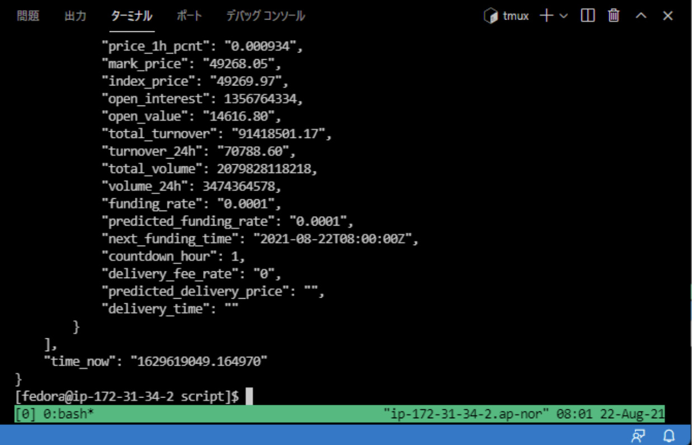
環境としてもCloud9でやれていたことは全てできるようになりました。
これで問題なくbotを稼働できますね!。tmuxでさらにターミナルを立ち上げたりスクロールのには別のショートカットキーを利用します。それについてはtmuxの使い方を検索してみてください。
-----------------------------------ローカル環境について-----------------------------------
ローカル環境の作成については必要な場合のみ作成するのがいいと思います。
(またはLinuxの勉強がしたい場合)
※ローカル環境を作成するメリットは
クラウド環境は性能や容量を上げると高額になるがローカル環境は無料または初期投資のみで済む
特にバックテストを回す場合は(高性能なら)メインマシンからWSL環境を構築する、WebSocketで大量にデータを溜めこむ場合は専用のLinuxマシンを用意するといいと思います。
クラウド環境はローカル環境より快適にコーディングできる
東京リージョン以外に立てるとやはり遅延を感じることがあるので便利です。またWSLはAWSにSSHできないオフライン環境でも動作します。
WSLについて
Windows Subsystem forLinux(WSL)とはWindowsユーザーであれば無料で利用できるLinux環境です。利用するのは現在主流のWSL2バージョンです。WSLなしでWindows環境でコーディングするのもありですが、Pythonの動作の同一性を求めるならクラウド・ローカルどちらもLinuxでやるのがよいと考えています。(エンジニア寄りの思想ですが) LinuxベースのmacOSユーザーには全く不要かと思います。
手順を1つずつ解説すると大変長くなるので、Microsoftのドキュメントを参照してWSL2環境を立ち上げてみてください。(Windows Insider Prevewでなければ手動インストールの手順になると思います。Windowsバージョンを確認してください。)
手順 6でUbuntuのインストールが促されるますが、手順 5で止めてください。
FedoraはWSL版もあるのでこちらを利用しましょう。
「.msixbundle」の拡張子のファイルをダウンロードしてクリックすると簡単にインストールできます。
インストールしたらまずはWindowsターミナルから
fedoraremix
と入力します。そうするとユーザー名とパスワードの作成になるのでコンソールに従って入力してください。
では次にVS Codeで先ほどのSSHの手順と同じように「リモートエクスプローラー」のタブを開くと、「WSL Targets」から「fedoraremix」が利用できるようになっています。
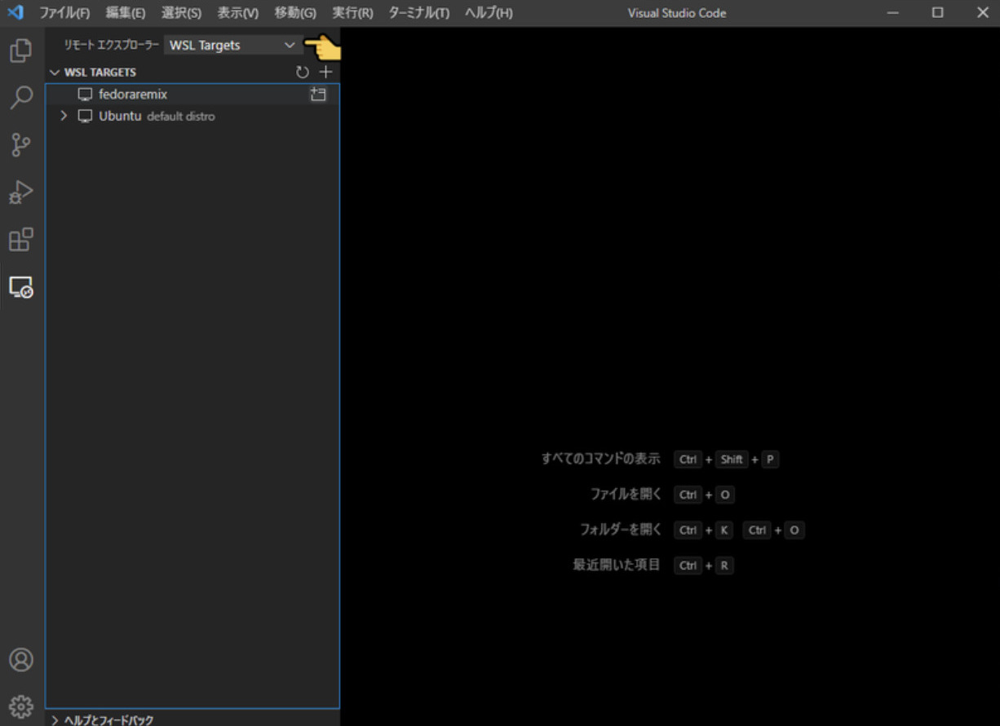
WSL環境を開いたらdnf upgradeやPylanceのインストールを行って環境を整えましょう。 クラウド環境よりレスポンスがよく開発が捗ると思います！
専用のLinuxマシンについて
WSLだとWindowsに依存しているので、シャットダウンやWindows Updateの再起動があるのでbotの開発は適していても稼働やWebSocketからのデータの取得には適していません。 クラウドよりランニングコストを低く抑えながらバックテスト用のデータを構築する場合はやはり専用のマシンがあると便利かと思います。
コスパよさげなマシンはこちら
(ただ現在は流通がなくなってきて高くなっているので微妙かもしれません) Raspberry Piなどに詳しい方はそちらでもいいと思います。
LinuxマシンへのFedoraのインストールは公式サイトからISOをダウンロードして行いましょう。
インストールはAWSやWSLに比べて少し複雑ですがよくあるLinuxのインストール手順なので
分からない場合は方法を調べてみてください。
クラウドとローカルのファイル同期について
WSLやLinuxマシンなどのローカルでbotをコーディングした場合、クラウド環境で稼働させる際にCloud9と同じようにファイルコピペの手作業問題が発生します。これの抜本的な解決方法ですが
- GitHubなどのリモートリポジトリにアップロードしてgitコマンドを利用する
- rsyncコマンドなどでファイルを同期する
- scpコマンドなどで転送する
などです。これについても解説したいですが、さらに長くなってしまうのでまた別の記事で書きたいと思ってます。 気になる方は各自コマンドを調べてみてください。
---------------------------------------スマホからSSH--------------------------------------
スマホからクラウド環境にSSHする方法です。
Androidの場合は「Termux」を入れましょう。
iPhoneは使ってないので分かりませんが検索すると「Termius」などのアプリが使えるかもしれません。
以下は「Termux」上でのコマンドの説明です。スマホでポチポチしてください。
pkg install -y openssh
こちらでSSHコマンドが使えるようになります。
SSH接続するためにはローカルPCの「.ssh」フォルダに保存した「id_rsa」と「config」ファイルが必要になります。 Googleドライブなどに保存してスマホにダウンロードしてください。
termux-setup-storage
こちらのコマンドを入力するとTermuxがスマホのストレージにアクセスできる「storage」ディレクトリが作成されます。Windows側で設定したのと似たような感じで「.ssh」ディレクトリを作る作業をします。
mkdir .ssh
mv storage/downloads/id_rsa .ssh/
mv storage/downloads/config .ssh/
chmod 700 ~/.ssh
chmod 600 ~/.ssh/id_rsa
(AndroidはLinux環境なのでchomodで権限の設定が必要になってます)
こちらの作業ができたら
ssh fedora
でPCと同じようにクラウド環境に接続できるか確認してみましょう! 先ほどと同じようにtmuxコマンドから稼働中のbotを確認したりできます。 またTermux自体もPythonが入るので色々と遊んでみるといいかもしれません。
---------------------------Python 3.10をインストールしてみる--------------------------
Fedoraは最新から過去までの色々なバージョンのPythonをインストールできます。
最後にその方法を紹介します。
dnf search python3.*
利用可能なPythonバージョンが表示されます
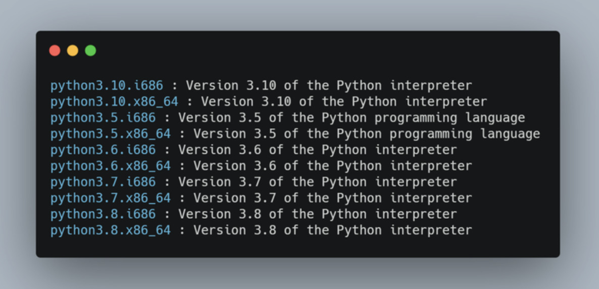
現在プレリリース版のPython 3.10をインストールしてみます。
sudo dnf install python3.10 -y
VS Code上でPythonインタープリターを3.10に変更します
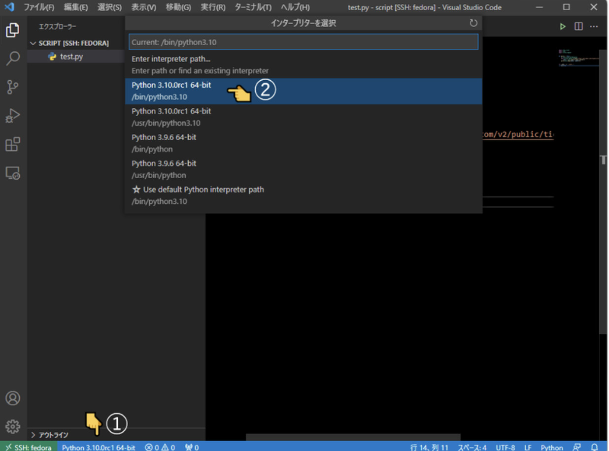
①が表示されない場合はtest.pyを開いた状態にしてみてください
②が表示されない場合はVS Codeを再起動してみてください)バージョンの確認とPython 3.10から実装される新しいmatch文を書いて動作するか試してみます。コード↓
import sys
def http_error(status):
match status:
case 400:
return "Bad request"
case 404:
return "Not found"
case 418:
return "I'm a teapot"
case _:
return "Something's wrong with the internet"
def main():
print(sys.version)
result = http_error(400)
print(result)
if __name__ == '__main__':
main()
結果
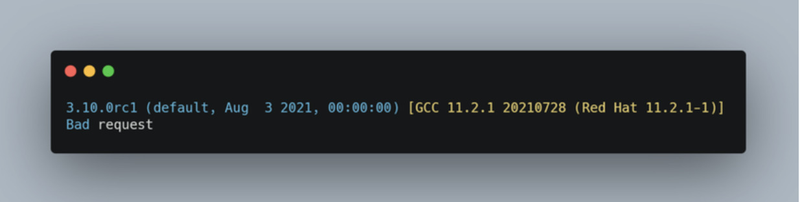
環境構築終わり